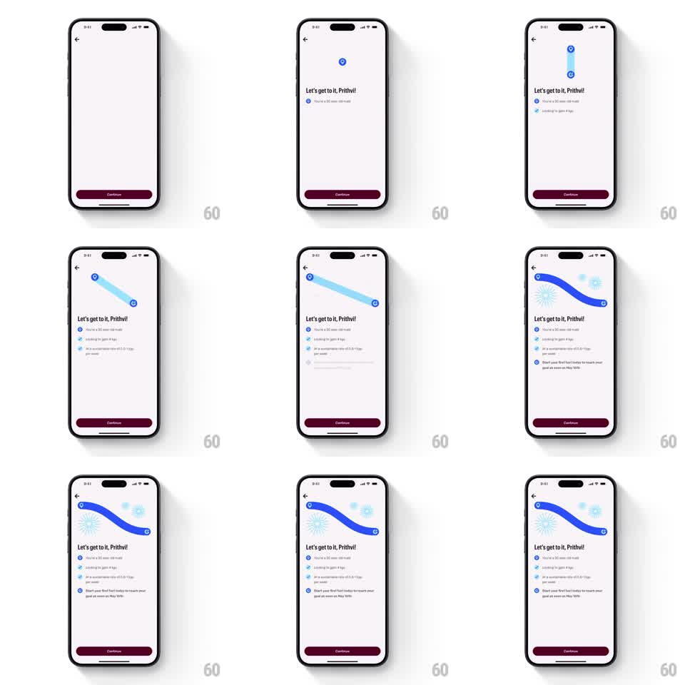

Media
Frame-by-frame

Rebuild this animation 1:1: Zero's fasting setup summary - a blue path draws itself between two pins while the user's goals check in one by one beneath it.

Rebuild this animation 1:1: Zero's fasting setup summary - a blue path draws itself between two pins while the user's goals check in one by one beneath it. ## Integration Integration: stack-agnostic spec - springs given as stiffness/damping, timed motions as duration + curve; map every value to your framework and animation library of choice. ## Scene Pale pink screen with a back chevron and a maroon "Continue" button at bottom. Top center: two circle pins connected by a drawn route. Below: "Let's get to it, Prithvi!" and the goal list - "You're a 30 year old male", "Looking to gain 4 kgs", "At a sustainable rate of 0.5-1 kgs per week", and "Start your first fast today to reach your goal as soon as May 10th". ## Motion spec Pattern: route drawing with staggered goal reveals. - The start pin pops in (scale 0 -> 1, spring ~380/18), then the route draws toward the destination pin (stroke along an S-curve, 1s, ease-in-out), the destination pin popping as the path arrives (spring ~380/18). - The route thickens from a thin line to a bold blue ribbon (250ms) and sparkle bursts bloom at both pins (scale 0 -> 1 -> 0, 500ms, staggered). - Goal rows reveal top-down: each fades + rises 10pt (300ms) with its check icon drawing (stroke, 200ms), staggered 200ms apart; the final row (the call to action) is tappable-styled and settles with a soft scale (1.02 -> 1). - Continue stays pinned and static throughout. ## Calibration - The route draws at a travel pace - like watching a journey, not an instant line. - Each goal check lands exactly when its row finishes rising. ## Reduced motion Route and rows fade in fully formed (300ms), top to bottom. ## Don't miss - Pin circles are blue outlines with a white center; the route is solid blue. - The last row is visually distinct: it is the action, the others are facts.